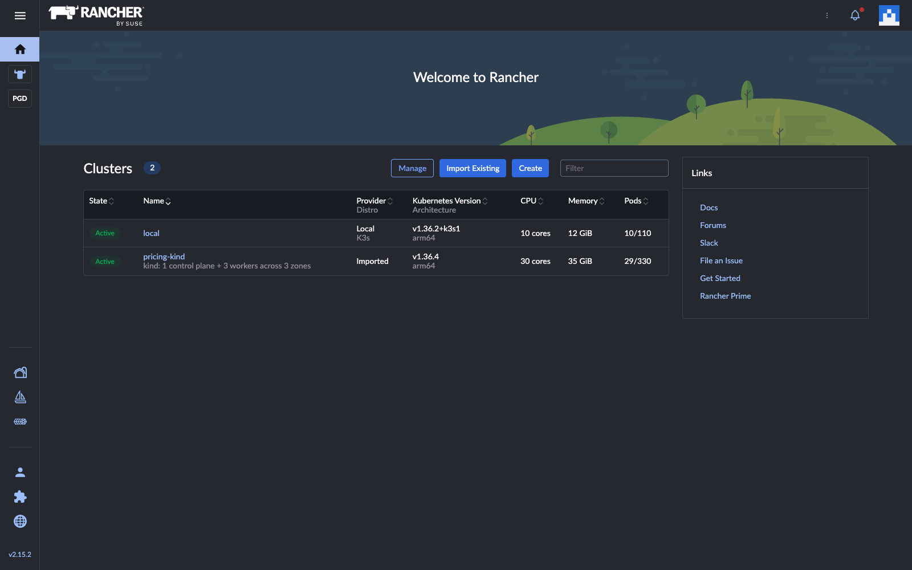
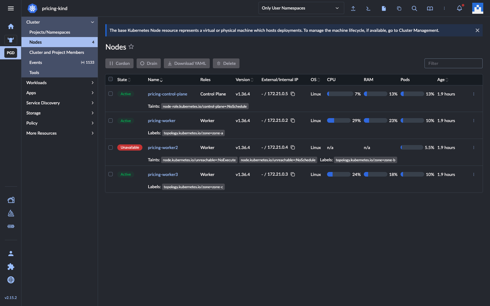
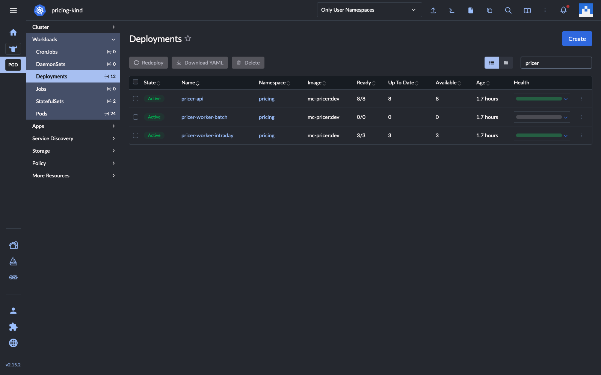
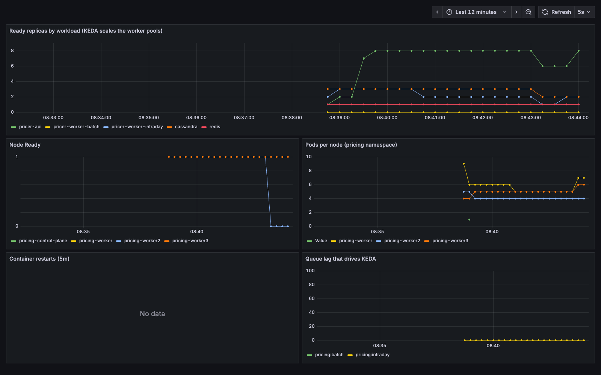
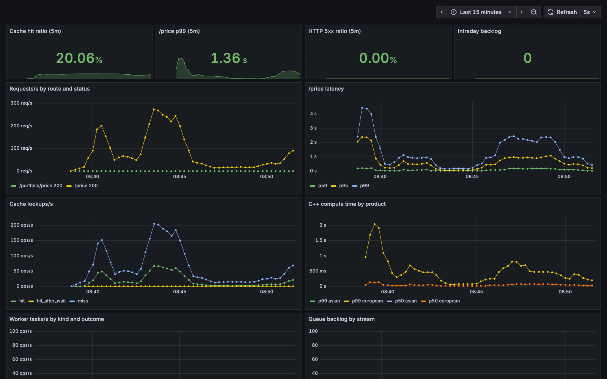
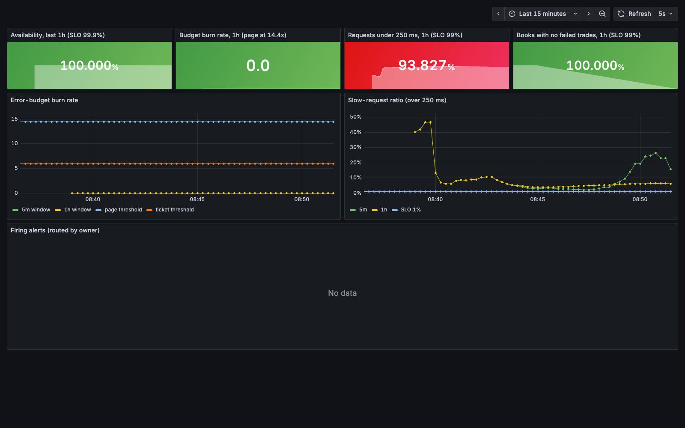
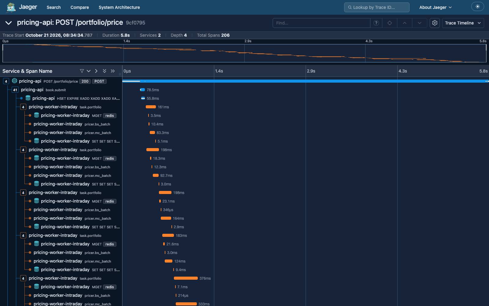
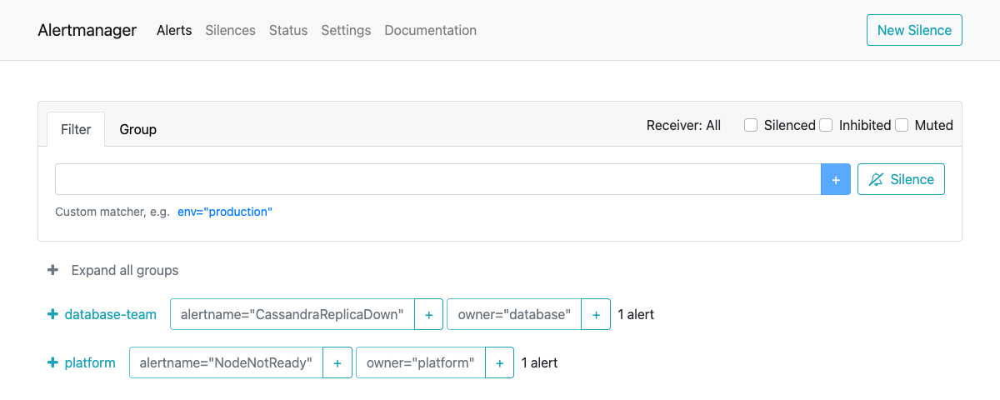

A C++ pricing library, served to the desk and proven under failure.
Measured on a laptop cluster; every number links to its result file.
Terms: PFE (peak exposure: how much the counterparty could owe us in a bad-case, 95th-percentile scenario); CVA (the price of the counterparty’s default risk); GIL (Python’s global interpreter lock, which lets only one thread run Python code at a time); KEDA (a Kubernetes autoscaler that adds or removes workers as the queue grows or empties).
- 147MBlack-Scholes prices a second through one zero-copy NumPy callbench/results/core.json, bs_batch 8 threads
- 99.992%of prices served while 11 faults hit the cluster in 10 minutesbench/results/chaos-run3.json
- 1 to 8workers give bit-identical PFE and CVAbench/results/exposure.json
- 6 of 6siege scenarios recovered, detected and routed to an ownerbench/results/siege.json
Five engineering decisions, each measured.
Each row is a problem, the decision that fixed it and the measured outcome, with a link to the chart.
Threads took turns
- Problem
- Python threads calling the engine ran one at a time.
- Decision
- Release the GIL inside the pybind11 binding.
- Outcome
- GIL held: 44 to 46 pricings/s from 1 to 8 threads. Released: 45.8 to 175.5 pricings/s.
One call per option is slow
- Problem
- A Python call for every option spends its time on call overhead.
- Decision
- One batch call over NumPy arrays read in place (zero-copy), split across threads.
- Outcome
- Pure Python loop 0.85M/s, per-call binding 3.3M/s, batch on 8 threads 147M/s.
Urgent requests waited
- Problem
- Intraday requests queued behind big batch books.
- Decision
- Separate priority lanes in Redis Streams.
- Outcome
- Intraday during batch: 5.17 s first-in-first-out, 0.32 s with priority lanes.
Results changed with worker count
- Problem
- The same book gave different numbers on different worker counts.
- Decision
- Common random numbers seeded by market-data version, names and nodes only.
- Outcome
- Identical PFE and CVA on 1, 2, 4 and 8 workers.
Storage sat in the request path
- Problem
- Writing every price to Cassandra before answering added latency.
- Decision
- A write-behind log: a background thread drains a bounded queue.
- Outcome
- Price p99 5.49 ms with a synchronous write, 1.65 ms with write-behind.
Evidence: bench/results/core.json (gil, batch), priority.json, exposure.json, write_behind.json.
Pick any part of the system and see why it is there.
Select a component, or trace a 2,000-trade book through it. Each one carries a measured number and the file it came from.
A 2,000-trade book, from client to trace.
Evidence: the component list and reasons come from docs/ARCHITECTURE.md; the trace is the real 2,000-trade book in bench/results/tracing.json (206 spans, 3 pods).
The C++ core lets Python threads run in parallel and reads NumPy memory in place.
pybind11 releases the GIL (Python’s one-thread-at-a-time lock) around every pricing call and takes arrays without copying them; the module keeps no global state.
m.def("price_european_mc", &european, ..., py::call_guard<py::gil_scoped_release>());
PYBIND11_MODULE(pricer_core, m, py::mod_gil_not_used())Threads scale only when the GIL is released
One call, eight threads: 147M prices a second
Evidence: bench/results/core.json (gil, batch) on a 10-core arm64 laptop; code in core/python/bindings.cpp.
Same numbers on 1, 2, 4 or 8 workers
A counter-based random stream means a scenario draws the same numbers wherever it runs. Choose a worker count: speed changes, the answer does not.
Workers
| Workers | Time | Revaluations a second | PFE and CVA identical |
|---|---|---|---|
| 1 | 7.98 s | 75.7M | yes |
| 2 | 4.50 s | 134.4M | yes |
| 4 | 2.87 s | 210.2M | yes |
| 8 | 2.69 s | 224.8M | yes |
Evidence: bench/results/exposure.json, 604.3M revaluations per run, each run flagged identical: true. The file stores one reference profile, so the curve is drawn once; the flag is what records equality at each worker count.
Monte Carlo: antithetic paths help a little, a control variate helps a lot
Evidence: bench/results/core.json (convergence, variance_reduction): variance cut 1,009 times, so 198 paths match what plain needs 200,000 for.
Add workers and book throughput rises; intraday pricing stays fast beside batch.
Books split into tasks on Redis Streams. Two streams keep risk batch from queueing ahead of the trading desk, and KEDA (the autoscaler) sizes each pool on its own lag.
Book pricing, trades a second
Evidence: bench/results/portfolio.json. A 10,000-trade book goes from 2,295 trades a second on 1 worker to 7,335 on 8. Tasks of one trade are 2.6 times slower than tasks of 50; the default sits on the plateau.
Intraday price during a batch run
First-in-first-out queueing made intraday wait 5.17 s behind batch. Priority streams cut it to 0.32 s; batch pays 0.6 s.
Evidence: bench/results/priority.json.
KEDA autoscaling, replayed
Evidence: bench/results/keda.json. The file records replicas only, not stream lag, so the lag that triggers scaling is not plotted.
Lose a Cassandra node and prices keep flowing.
Three nodes, replication factor 3, LOCAL_QUORUM and a token-aware driver: any one node can go.
Take nodes down
The ring is a model of the quorum rule. The measured kills are below.
Two real node kills in the chaos run
- 0 errorsin 5,139 prices in the 30 s after kill 1 (t=137 s)
- 0 errorsin 2,007 prices in the 30 s after kill 2 (t=467 s)
- 314 msp99 after kill 1
- 681 msp99 after kill 2: the tail rose, nothing failed
Evidence: bench/results/chaos-run3.json, windows computed from every recorded price request after each SIGKILL cassandra-0. The alert CassandraReplicaDown routed to the database team. The separate per-fault result files were not committed, so these windows come from the run itself.
The price log never blocks a price
Rows go to a bounded queue drained by a background thread. If Cassandra is slow or down, rows are dropped and counted; the request never waits.
Book throughput stays the same (7,669 against 8,208 trades a second for 10,000 trades); what moves is the single-price latency.
Evidence: bench/results/write_behind.json.
Each injected failure was detected, recovered and checked; one chaos-run loss is fixed but not re-run.
Read each fault as failure, then detection, then recovery, then verification. Ten minutes, 11 faults: pods, workers, a Cassandra node, Redis and a whole Kubernetes node, under continuous load.
Chaos run, replayed
Evidence: bench/results/chaos-run3.json: 76,481 prices, 6 errors (99.992%), p99 553 ms; 29 of 30 books complete with 0 of 58,000 trades failed; 4 of 4 exposure runs identical. Run 2 is excluded because screenshots and Rancher crash-looping on the same CPUs skewed it (99.61%); see PERFORMANCE_REVIEW.md.
Status of the 10-minute chaos run. 99.992% of 76,481 prices were served through 11 faults, 0 of 58,000 trades failed, and 29 of 30 books completed. The lost book was a client connection reset while a node was down. The fix is an Idempotency-Key header plus GET /jobs/{id}, so the client can poll the same job instead of resending it.
- Tested: the client-reset retry with the same key is in the siege suite (6 of 6 scenarios pass).
- Needs re-verification: the full chaos run has not been repeated since the fix, so 29 of 30 is the last measured result.
Siege scorecard: failure, detection, recovery, verification
Client abandons its book requests mid-flight, then retries with the same key
- Detected by
- alert BookFailureFastBurn; metrics jobs_total{kind=portfolio,mode=distributed,outcome=complete}
- Recovery
- owner core; 2.17 s
- Verified
- Tested: pass. One job, one record; the retry returns the baseline result.
Worker killed holding an exposure block
- Detected by
- alert TasksStuckPending; metrics jobs_total{kind=exposure,mode=distributed,outcome=complete}; worker_reclaimed_total; worker_tasks_total{kind=exposure,outcome=ok}
- Recovery
- owner core; 0.83 s
- Verified
- Tested: pass. Block reclaimed; PFE bit-identical to the local run.
Malformed message, a crash-looping task and an unpriceable task in the stream
- Detected by
- alert PoisonTrade; metrics worker_tasks_total{kind=bogus,outcome=error}; worker_tasks_total{kind=portfolio,outcome=poison}; worker_tasks_total{kind=unknown,outcome=malformed}
- Recovery
- owner quant; 0.97 s
- Verified
- Tested: pass. Bad messages dropped or failed; the book still prices.
Redis unreachable for 0.4 s with the book half done
- Detected by
- alert RedisCircuitOpen; metrics worker_tasks_total{kind=portfolio,outcome=ok}
- Recovery
- owner platform; 2.16 s
- Verified
- Tested: pass. API answers 503 with Retry-After; the retry completes the same job once.
Worker killed while holding a claimed task
- Detected by
- alert TasksStuckPending; metrics worker_reclaimed_total
- Recovery
- owner core; 0.98 s
- Verified
- Tested: pass. Another worker reclaims it; prices match the clean run.
Original worker finishes after its task was reclaimed and redone
- Detected by
- alert TasksStuckPending; metrics worker_reclaimed_total; worker_tasks_total{kind=portfolio,outcome=error}
- Recovery
- owner core; 1.15 s
- Verified
- Tested: pass. A late identical write is harmless; a late error never replaces a good result.
Evidence: bench/results/siege.json, generated by pytest tests/siege: 6 passed, 0 failed.
The consoles, captured from the running cluster

Rancher manages the kind cluster: 1 control plane and 3 workers in 3 zones, 30 cores. 
The whole-node fault: one worker Unavailable with its taints, the other three Active. 
Deployments: API 8 of 8, intraday workers 3 of 3, batch workers 0 of 0 because KEDA scaled the idle pool to zero. 
Cluster dashboard: replicas per workload as KEDA scales, one node dropping out of Ready, queue lag. 
Service dashboard: cache hits, p99, 5xx ratio, backlog and C++ compute time by product. 
SLO dashboard: availability and burn rate against the page threshold. The 250 ms objective reads 93.8% here, in red: the capture is not tidied. 
One 2,000-trade book as one trace: 206 spans in 5.8 s, across the API and the intraday workers. 
Alerts routed by owner: CassandraReplicaDown to the database team, NodeNotReady to the platform team.


Evidence: screenshots in docs/img/ui, taken from the running kind cluster by scripts/capture.py.
Nothing ships until the checks and the scan pass.
The C++ is run under sanitizers and Valgrind, the manifests and alert rules are validated, and an image is scanned before it is pushed or signed.
Every change: CI
- Tests and coverage gatepytest with a 75% coverage floor on the service and tools.
- Sanitizers and ValgrindASan and UBSan, TSan, memcheck on the C++ tests and the Python extension.0 errors, 1,203 blocks freed
- Manifests and ruleskubeconform in strict mode, promtool for rules, amtool for the Alertmanager config.
- Image smoke testBuild the image, start it, price once.
Every release
- Build locallyNothing is pushed yet.
- Scan before pushTrivy fails the job on any fixable critical vulnerability.
- Push with SBOMThe same layers, plus an SBOM and provenance.
- Sign by digestKeyless cosign signature, tied to the pushed digest.
Evidence: .github/workflows/ci.yml, .github/workflows/release.yml, and the sanitizer results in docs/ENGINEERING.md: TSan 35 of 35 with no races; ASan and UBSan 34 pass, 1 skipped by design.